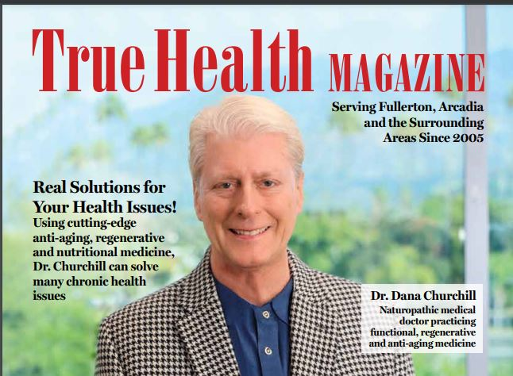

Dr. Dana Show · March 27, 2025
Blog & media
Dr. Dana Show · March 27, 2025

Articles · Fresh News · January 27, 2026
https://www.instagram.com/reel/DTqgFRbEt44/?igsh=NjZiM2M3MzIxNA==
Read more →
Articles · Video Library · June 24, 2024

Media · April 5, 2020

Fresh News · Media · October 7, 2021

Articles · Video Library · October 17, 2023

Media · April 4, 2020

Articles · Media · July 23, 2025
Roughly 160,630 bottles of levothyroxine sodium tablets are under recall, the FDA said. The Food and Drug Administration (FDA) this week upgraded a recall of tens of thousands of bottles…
Read more →
Doctor’s Blog · May 5, 2025

Doctor’s Blog · May 5, 2025
Doctor’s Blog · May 5, 2025
Dr. Dana Show · May 8, 2025
Articles · Video Library · November 1, 2024
Articles · Doctor’s Blog · June 2, 2023
Doctor’s Blog · April 3, 2025
Dr. Dana Show · May 29, 2025
In this powerful interview, Patricia, a veteran personal trainer, shares her remarkable journey from struggling with unexplained weight gain and hormonal issues to a complete health turnaround. Discover how she:…
Read more →
Articles · Fresh News · May 9, 2025
Articles · Video Library · June 3, 2024
Dr. Dana Show · May 8, 2025
Doctor’s Blog · April 3, 2025
Dr. Dana Show · March 27, 2025
Articles · Video Library · November 1, 2024

Media · November 10, 2020
Articles · Video Library · November 1, 2024
Media · November 17, 2020
Doctor’s Blog · May 5, 2025
Articles · Video Library · May 27, 2024

Dr. Dana Show · August 28, 2025
Interview with Corey, a Hollywood transformative coach and A-list trainer known for his work with Michael B. Jordan on the Black Panther and Creed films. He shares his personal journey…
Read more →
Fresh News · September 11, 2023
Vibroacoustic Sound Therapy System BIOHARMONIC TECHNOLOGIES IS THE INDUSTRY LEADER IN VIBROACOUSTIC SOUND TECHNOLOGY These are technologies and content that help raise the vibration of the planet and harmonize humanity using…
Read more →July 23, 2025
Roughly 160,630 bottles of levothyroxine sodium tablets are under recall, the FDA said. Overview The US Food and Drug Administration (FDA) has upgraded a recall affecting approximately 160,630 bottles of…
Read on live site → (external site)
Articles · Fresh News

Articles · Video Library

Articles
Doctor’s Blog
Doctor’s Blog
Doctor’s Blog
Doctor’s Blog
Doctor’s Blog
Doctor’s Blog

Dr. Dana Show

Dr. Dana Show

Dr. Dana Show

Dr. Dana Show

Dr. Dana Show

Dr. Dana Show
Media
Media
Media
Fresh News

Video Library

Video Library
Video Library

Video Library
The Churchill Center · Arcadia
Consultations in person or virtual.